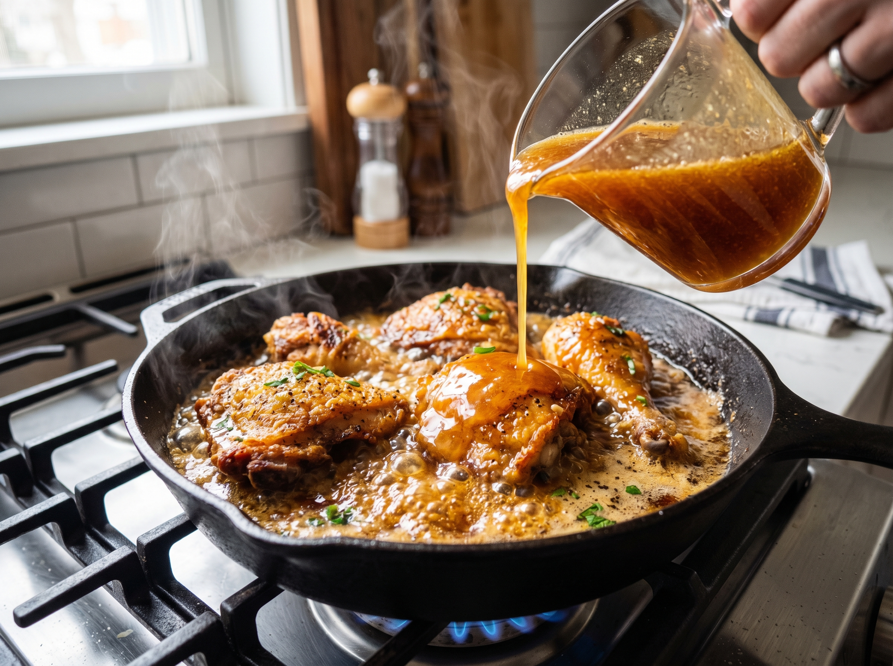
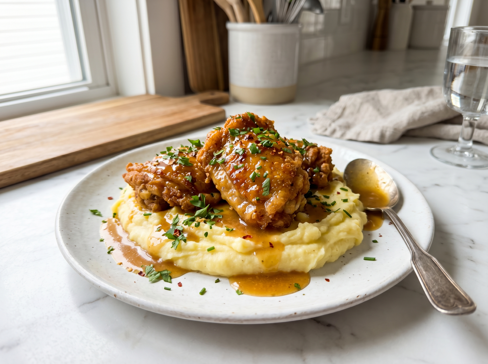

This one-pan honey butter chicken is what weeknight cooking is all about — five pantry ingredients, one pan, 25 minutes, and a sauce so good you'll be spooning it over everything on the plate. Golden-seared chicken thighs glazed in a buttery honey garlic sauce that caramelizes into pure magic.
I first made this recipe on a whim when I was craving something sweet and savory but had zero energy for a complicated dinner. The combination of honey, butter, garlic, and a splash of soy sauce creates a glaze that hits every flavor note — rich, sweet, savory, slightly tangy — and it coats the chicken in a glossy lacquer that looks like you spent an hour on it. You didn't. You spent 25 minutes.
Why You'll Love This Recipe
- Only 5 main ingredients — all pantry staples you likely already have
- One pan, 25 minutes — weeknight-proof
- That sauce, though — sweet, buttery, garlicky, slightly sticky
- Works with any side — rice, mashed potatoes, roasted veggies, pasta
- Kid and adult approved — the sweetness appeals to everyone at the table
What Makes This Honey Butter Sauce Special
The magic is in how these four humble ingredients interact under heat. Butter gives richness and a silky mouthfeel. Honey caramelizes as it cooks, creating those sticky, slightly crispy edges on the chicken. Garlic adds depth that cuts through the sweetness. And soy sauce — just one tablespoon — adds an umami background note that makes you keep wanting more without being able to name what it is.
The apple cider vinegar (which you can swap for lemon juice) lifts everything at the end and keeps the sauce from being cloying. It's a small addition that makes a huge difference.
Find all these ingredients in the condiment and baking aisles at any Walmart, Kroger, Trader Joe's, or Whole Foods.
Kitchen Tools You'll Need
- Large skillet (12-inch / 30cm) — cast iron or stainless steel both work great
- Tongs for flipping chicken
- Instant-read meat thermometer (highly recommended)
- Small bowl for mixing the sauce
- Wooden spoon or silicone spatula
One-Pan Honey Butter Chicken
Juicy chicken thighs with a sticky, golden honey butter glaze. One pan, 25 minutes, and a sauce you'll want to drink with a spoon.
Ingredients

Instructions
- 1
Season the chicken. Pat chicken thighs dry with paper towels. Season generously on both sides with salt, pepper, and smoked paprika.
- 2
Sear until golden. Melt 1.5 tablespoons of butter in a large skillet over medium-high heat. Once the butter starts to foam, add the chicken. Sear undisturbed for 5–6 minutes until deep golden brown. Flip and cook another 4–5 minutes until the internal temperature reaches 165°F / 74°C. Transfer to a plate.
- 3
Build the honey butter sauce. Reduce heat to medium. Add the remaining 1.5 tablespoons of butter to the pan. Once melted, add the minced garlic and cook, stirring, for 60 seconds until golden and fragrant.
- 4
Add the glaze ingredients. Pour in the honey, soy sauce, and apple cider vinegar. Stir together and let the sauce bubble and reduce for 1–2 minutes until it thickens slightly and coats the back of a spoon.
- 5
Glaze and serve. Return the chicken to the pan. Spoon the sauce generously over each piece and cook for 1 minute more to let the glaze set. Garnish with fresh thyme or parsley and serve immediately over rice or your favorite side.

Pro Tips for Perfect Honey Butter Chicken
- Don't burn the honey. Keep the heat at medium when making the sauce — honey can go from caramelized to burned in seconds on high heat.
- Use real butter. Margarine or oil won't give you the same rich, nutty flavor that butter develops in this sauce. It's worth it.
- Sauce too thick? Add a tablespoon of water or chicken broth to thin it out.
- Sauce too thin? Add an extra teaspoon of honey and let it reduce for another minute.
- For extra-crispy chicken: After seasoning, let the chicken sit uncovered in the fridge for 30 minutes — the surface dries out even more for a better sear.
Variations to Try
- Spicy honey butter: Add ½ teaspoon red pepper flakes or a dash of hot sauce to the glaze.
- Mustard honey butter: Stir in 1 teaspoon of Dijon mustard with the honey for a tangy, French-inspired twist.
- Herb butter version: Add 1 tablespoon fresh thyme or rosemary leaves to the butter while it melts.
- Dairy-free: Use vegan butter (Country Crock Plant Butter or Earth Balance work well — available at Whole Foods and Target).
- Chicken breasts: Use pounded chicken breasts for a leaner option — reduce cook time to 4 minutes per side.
Serving Suggestions

- White or brown rice — the honey butter sauce acts as the most incredible rice sauce
- Mashed potatoes — a classic pairing that soaks up every drop of glaze
- Roasted asparagus or green beans alongside
- Simple steamed broccoli — great for kids who love dipping in the sauce
- Garlic bread for the most indulgent option
Storage & Reheating
Refrigerator
Store in an airtight container for up to 4 days.
Freezer
Freeze up to 3 months. Thaw overnight in the fridge.
Reheat
Warm in a skillet over low heat with a splash of water. Add a drizzle of fresh honey to revive the glaze.
Frequently Asked Questions
Can I use chicken breasts instead of thighs?
Yes. Pound chicken breasts to an even ½-inch thickness for faster, more even cooking. Reduce searing time to 3–4 minutes per side and check for 165°F / 74°C. Thighs are more forgiving and stay juicier, but breasts work perfectly fine in this recipe.
What type of honey works best?
Any standard clover honey (the classic grocery store squeeze bottle) works perfectly. For a deeper, more complex flavor, try buckwheat honey or wildflower honey — both available at Whole Foods and Trader Joe's. Avoid ultra-processed "honey-flavored syrup," which doesn't caramelize the same way.
My sauce burned — what happened?
Honey burns quickly on high heat. Make sure you reduce the heat to medium before adding the glaze ingredients. If the pan looks too dark or smells bitter, start the sauce fresh in a clean pan — it only takes 3 minutes and saves the whole dish.
Can I make the sauce ahead of time?
You can mix the honey, soy sauce, and vinegar ahead of time and store it in a small jar in the fridge for up to a week. Add the garlic fresh when you cook — pre-minced garlic sitting in liquid can turn bitter and develop off flavors over time.
Is this recipe gluten-free?
The recipe can be made gluten-free by substituting regular soy sauce with tamari (gluten-free soy sauce) or coconut aminos. Both are available at Whole Foods, Trader Joe's, and most major grocery stores in the natural foods or Asian foods aisle.
Nutrition Information
Per serving (1 chicken thigh with sauce). Values are estimates.
| Nutrient | Amount per Serving |
|---|---|
| Calories | 440 kcal |
| Total Fat | 24g |
| Saturated Fat | 9g |
| Protein | 36g |
| Carbohydrates | 18g |
| Sugar | 14g |
| Sodium | 480mg |
You Might Also Love


Made This Recipe?
Leave a star rating and let me know what you served it with! And if you're on Pinterest, save this recipe — it's a regular weeknight staple for a reason.
📌 Save on Pinterest